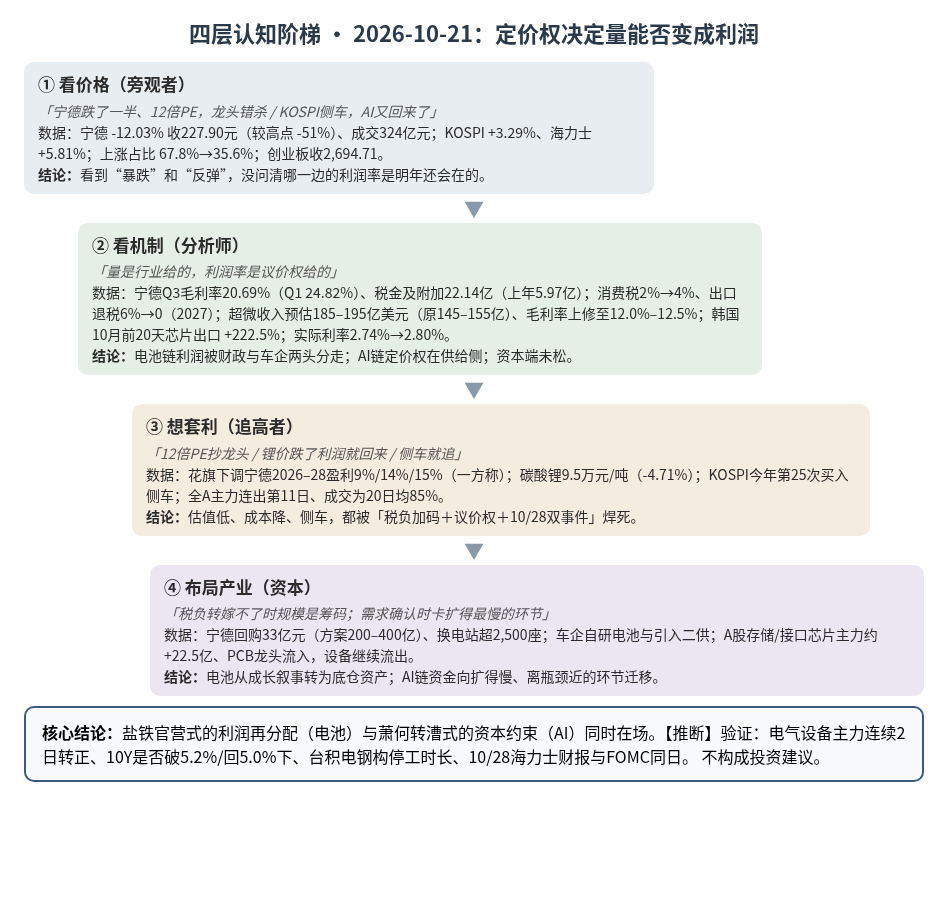
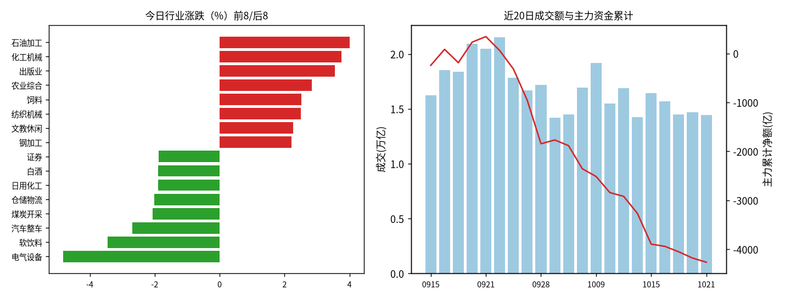
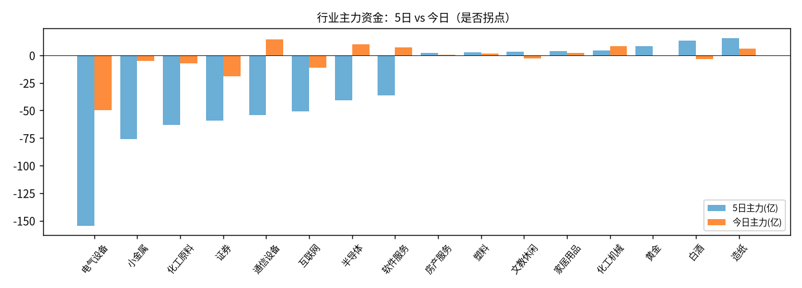

A股投研日报 · 2026-10-21（四层认知版）
同一天，两条链对“量能不能变成利润”给出了相反的答案，分界线是定价权。AI 服务器链把量变成了利润：超微把上季收入预估从 145–155 亿美元上修到 185–195 亿美元，毛利率也从 10.4%–10.8% 上修到 12.0%–12.5%；韩国 10 月前 20 天芯片出口同比 +222.5%，KOSPI 涨 3.29%。电池链的量却被税和议价权吃掉：宁德时代三季度毛利率 20.69%，是 2022 年四季度以来最低，今天 A 股跌 12.03%，成交 324 亿元，是上市以来第二高。A 股的钱在“有定价权的量”和“没有定价权的量”之间换仓，但总量还在缩：全 A 主力连续第 11 日净流出，成交只有 20 日均值的 85%。资本端没有松，10 年美债 5.12%、实际利率 2.80%，今天的反弹是需求端的确认，不是资本端的放松【推断】。
本报告为基于公开数据的研究分析，不构成投资建议。
方法：四层认知阶梯 + 历史周期律（
cognitive-ladder.md/references/cases.md）。市场数据来自 Tushare Pro（见附录）；产业/宏观数据附来源链接；推断=本文判断；“一方称”=未经独立核验的单方说法；“推算”=本文用公开数字计算。不构成投资建议。
今日市场概况
- 指数：上证指数 -0.60% 收 3,713.03，深证成指 -0.82%，创业板指 -1.62% 收 2,694.71，收盘跌破 10/20 盘中低点 2,706.41；科创50 +0.06%，中证1000 +0.20%，中证500 -0.01%，沪深300 -0.97%，上证50 -0.68%。近 5 日创业板指 -6.00%、科创50 -2.68%、上证50 -1.08%；三大指数均在 MA20 下方（上证 MA20 3,824.82，创业板 MA20 3,073.64）（Tushare，见附录）。
- 量能与宽度：成交 14,421 亿元，较上日 -2.0%，约为 20 日均值 16,907 亿元的 85%（推算）；上涨 1,981 家 / 下跌 3,364 家，上涨占比 35.6%（上日 67.8%），个股中位数 -0.4%；涨幅 ≥9.8% 的 59 家、跌幅 ≤-9.8% 的 10 家。
- 主力资金：全 A 主力（大单+特大单）-84.8 亿元，连续第 11 日净流出；近 5 个交易日（10/15–10/21）合计约 -997 亿元（推算，10/20 时 5 日约 -1,261 亿元）。
- 行业：电气设备 -4.8%、主力 -49.6 亿，资金连续第 7 日流出，5 日 -154.8 亿；其中宁德时代 -12.03% 收 227.90 元、成交 324.39 亿元、主力 -13.0 亿，阳光电源 -4.92%（-6.9 亿）、蔚蓝锂芯 -9.25%（-5.4 亿）、亿纬锂能 -5.27%、国轩高科 -6.94%。半导体 +0.9%、主力 +9.7 亿（上日 -22.6 亿），流入集中在存储与接口芯片：兆易创新 +1.98%（+7.3 亿）、澜起科技 +5.36%（+4.9 亿）、德明利 +6.50%（+4.4 亿）、佰维存储 +3.32%（+3.4 亿）、长鑫科技 +1.61% 收 40.97 元（+2.5 亿），合计约 +22.5 亿（推算）；设备仍流出（拓荆 -3.4 亿、北方华创 -2.7 亿、中微 -2.6 亿）。通信设备 +2.1%、主力 +14.6 亿（上日 -4.9 亿），但内部分化：天孚通信 +5.10%（+7.5 亿）流入，新易盛 -1.36%（-8.0 亿）、中际旭创 -0.17%（-1.9 亿）流出。元器件里 PCB 龙头走强：沪电股份 +3.57%（+5.6 亿）、兴森科技 +4.57%（+3.9 亿）、生益科技 +1.50%（+3.7 亿）。证券 -1.9%、主力 -19.1 亿（Tushare moneyflow，推算）。
- 龙虎榜 / 北向：机构专用席位合计 +4.35 亿元，净买入居前超声电子（+1.72 亿）、移远通信（+1.44 亿）、通宇通讯（+1.35 亿）。北向每日净买入自 2024 年 8 月起不再披露；沪深股通成交前五为宁德时代、中际旭创、紫金矿业、新易盛、药明康德（成交额≠净买入）。宁德三季报显示陆股通三季度末持股 8 亿股，较二季度末减少 9,347.52 万股 源。
- 海外与宏观：KOSPI +3.29% 收 5,735.66，盘中触发两个月来首次买入侧车；三星电子 +5.67%、SK 海力士 +5.81% 收 129.4 万韩元；韩国 10 月前 20 天出口同比 +105.4%，其中芯片 +222.5% 至 275.2 亿美元 源。外资净买约 6,650 亿韩元，其中三星 4,722 亿、海力士 2,006 亿；个人净卖约 1.13 万亿韩元 源。触发因素是超微上修上季收入与毛利率 源。10 年美债官方收益率 10/20 为 5.12%（10/16 为 5.09%）源，10 年实际利率 2.80%（10/19 观测，上期 2.74%）；期权市场有人押注月底 10Y 升破 5.3% 源。DDR5 16Gb 现货 60.87 美元，上日 60.70 美元（TrendForce，经世界指标面板）。国内商品：碳酸锂主力 2701 收 95,040 元/吨，-4.71%；沪铜 2612 收 108,780 元/吨，+610；沪金 886.78 元/克，-2.96；上海原油 716.5 元/桶，-26.5 源。
- 盘后/事件：台积电高雄 F22 厂区 P4 新建工地 10/20 发生钢构吊装事故，4 人罹难，台积电称高雄工地及全台新建厂区的钢构作业已自主停工 源。
变化点
与上一交易日（10/20）相比：
- “二阶导定价”在电池链从担忧变成确认：10/20 设的验证点是“宁德财报后首日电气设备单日主力 < -30 亿元，则二阶导定价在电池链确认”。今天读数 -49.6 亿元，触发。宁德 -12.03%，是 2024 年 10 月 10 日以来最大单日跌幅；H 股 -11.41% 源。为何重要：市场惩罚的不是“量”（三季度营收同比 +58.6%），而是“量换利润的比率”。毛利率从一季度 24.82% 降到三季度 20.69%，而且新增的成本里有一块是政策性的（消费税、出口退税），不会随周期自动消失（变化一）。
- AI 链需求端得到一手确认，韩国与 A 股存储同步回流：超微上修、韩国芯片出口前 20 天 +222.5%，海力士 +5.81%；A 股存储与接口芯片主力约 +22.5 亿（推算），半导体行业由 -22.6 亿转为 +9.7 亿。韩国外资 10/19、10/20 连续两天“卖海力士、买三星”，今天两者都买，但三星（4,722 亿韩元）多于海力士（2,006 亿韩元）。为何重要：这是需求端的证据，与 10/19 以来“瓶颈在资本端”的判断不矛盾。资本端读数今天没有变好（实际利率 2.74%→2.80%）（变化二）。
- 宽度回落，指数破位：上涨占比 67.8%→35.6%，10/20 的宽度修复只维持一天；创业板收 2,694.71，跌破 10/20 设的“出清未完”线 2,706。为何重要：本轮第二次“宽度单日反弹后回落”（前一次是 10/9→10/12），存量换仓的判断不变。
与上周相比：
- 世界指标面板（10/21）：五盏灯颜色都没有变，仍是 4 黄 1 红（估值/情绪为红）。唯一的阈值提醒在灯下层：🟢 铜/金比（×1000）改善为🟢：1.585（上期 1.572），所在的“AI / 半导体周期”灯仍为🟡，最紧的两项是 CoreWeave 五年 CDS 约 1,200bp、10Y 实际利率 2.80% 源。为何重要：铜/金比是“增长预期 vs 避险需求”的比值，改善与今天的 AI 需求确认方向一致；但它只跨过阈值一点点，单日读数不足以改灯推断。
- 全 A 5 日主力约 -997 亿元，较 10/20 的约 -1,261 亿元收窄，原因是 10/14、10/15 两个大额流出日（-348.2 亿、-627.9 亿）中的前一个移出窗口（推算）；日度流出仍未停止。电气设备 5 日主力 -154.8 亿，仍是全行业最大的流出方向，其后是小金属（-76.0 亿）、化工原料（-63.1 亿）、证券（-59.0 亿）。
中长期展望
3–12 个月（到 2027 年中）： - 强化的趋势：①**“定价权分化”取代“AI vs 非 AI”：同样是量在涨，能把成本转给下游、或者自己就是瓶颈的环节（AI 服务器、HBM/DRAM、ABF 载板、高端 PCB）利润率在上修；量大但议价权在下游手里的环节（动力电池）利润率在下修推断。②政策性成本进入电池链**：锂电池消费税 2026-09-01 起按 2% 恢复征收，2027 年提到 4%（第一财经称 2027 年 9 月）；电池出口退税 2026-04-01 至 12-31 由 9% 降到 6%，2027-01-01 起取消 源源。这是可预知的、分年加码的成本，四季度是第一个完整征税季度。③资本价格高位胶着：10Y 5.12%、实际利率 2.80%，维持 10/19 起的“资本分级”判断。 - 减弱的趋势：①**“AI 需求见顶”的担忧**：超微、韩国出口两个一手读数都在加速；②电池链的“量价齐升”叙事：碳酸锂主力从 6 月一度超 21 万元/吨回到 9.5 万元/吨 源，上游涨价对利润的支撑没了，剩下的是税负和议价权。 - 未变的判断：HBM 页“2027 年只略紧（满足率约 90%）、周期顶部看 2027 年下半年”，CoWoS 页“2027 年最紧一环是 ABF 载板（估）”，今日都没有反证；韩国芯片出口 +222.5% 属于对“2026 年需求”的强化，不改 2027 年的供需判断。说明：本报告只做方向标注，不改动 HBM/CoWoS/PCB 页的核心判断与模型数字（改动需 John 批准）。
走向 2027： - 2027 年对电池链是“税负年”：消费税升到 4%、出口退税归零，两项都在 2027 年落地。宁德的说法是 2027 年行业需求“依然可以期待”、四季度排产环比仍在增长（公司称）源；摩根大通认为 2027 年全球电动车及储能电池需求将高于市场预期 20%–25%，但盈利能力恶化速度超预期（一方称）源。推断2027 年电池链很可能是“量的故事成立、利润的故事不成立”，龙头的护城河从“技术溢价”转向“规模与成本”，二线厂受冲击更大，行业集中度上升。 - AI 链 2027 年的约束顺序维持：资本价格 → 电力与执行 → ABF 载板与 HBM 物理产能。台积电全台新建厂钢构停工是一个新的执行层变量：台积电在新竹和高雄扩 2nm，预期 2027 年 2nm 年产能增加超过 1 倍（工商时报转述）源；停工若以天计影响可忽略，若以月计则会推迟 2027 年 2nm 爬坡推断。 - 什么会改变展望：①10/28 海力士财报与 FOMC 同日：营业利润明显低于一致预期 76.96 万亿韩元，或下调 2027 年资本开支，则存储从二阶导担忧升级为一阶导担忧；②宁德四季度毛利率回到 22% 以上（消费税转嫁成功），则“定价权丢失”判断需降级为“一次性结构波动”；③10Y 连续回到 5.0% 以下且信用利差收窄，则资本约束降级；④台积电新建厂钢构停工超过一个月，则上修 2027 年先进制程供给风险。
一、世界观定位（先问三句）
- 属于哪一阶段？三国鼎立→楚汉之争过渡带，无阶段切换信号。
- 三国层（科技/产能）实物端继续强化：韩国 10 月前 20 天芯片出口 +222.5%，DDR5 现货 60.87 美元（自 10/14 的 60.10 美元累计 +1.3%，推算）。
- 楚汉层（金融）没有松：10Y 5.12%、实际利率 2.80%、CoreWeave CDS 约 1,200bp（面板，10/15 观测）。中国侧 10 年国债 1.641%，中美利差约 348bp（世界指标面板），“关中粮仓”仍稳。
- 命中哪个历史原型？电池链新增一个原型：汉武帝“盐铁官营”。AI 链沿用“萧何转漕”。
- 剥结构：一个产业靠政策扶持做大（免消费税、出口退税），规模成为国家支柱后，国家开始从中收回租金；与此同时下游（车企）也在压价、自研、引入二供。利润被上（财政）下（客户）两头分走。
- 找原型：西汉初年盐铁私营，富商大贾“冶铸煮盐，财或累万金”；汉武帝在对外用兵、财政吃紧时把盐铁收归官营，行业规模不变，利润归属变了。速查表“产能过剩出清（盐铁整顿）→出清后集中、龙头集中度提升”也指向同一结构。
- 验差异：今天不是收归国有，而是用税率调节；且税负能否转嫁取决于产业链议价，龙头有更多筹码（摩根大通认为宁德最终或成为较大赢家，一方称）。所以只取方向：行业的利润率中枢下移，集中度上升，龙头从“成长股”变成“底仓资产”，正对应总纲纪律②“三国层从成长叙事变底仓资产”。
- 为何新增而不替换：AI 链的结构仍是“战力 vs 粮道”（萧何转漕），今日新信息（超微、韩国出口）是“战力”一侧的强化；电池链的结构是“国家与下游重新分配产业租金”，萧何转漕解释不了，所以新增。
- 领先指标指向？ 世界指标面板 4 黄 1 红，颜色未变：衰退风险🟡（确认类指标初请、萨姆未亮）、流动性🟡（实际利率 2.80%、HY OAS 329bp）、估值/情绪🔴（CAPE 40.9、巴菲特指标 255%）、中国信用与通胀🟡（PPI−CPI +4.1pp、信贷脉冲 -2.58%GDP）、AI/半导体周期🟡（铜/金比转🟢）。纪律：方向≠节奏，“盐铁官营”是年度维度的利润再分配，不是日线信号。回退条件：消费税和出口退税政策出现延期或返还安排，或电池价格四季度普涨覆盖税负，则“租金回收”原型失效。
二、变化一（主变化）：电池链的“盐铁官营”——量还在，利润的归属变了
第1层 · 看价格
- 标志性话语：「宁德跌了一半，12 倍 PE，龙头错杀」「电池要被 AI 抛弃了」。
- 数据：宁德 A 股 -12.03% 收 227.90 元，较 5 月 7 日历史高点 467.35 元回落 51.24%；H 股 -11.41%；成交 324.39 亿元，上市以来第二高；TTM 市盈率约 12 倍，2026 年预测市盈率约 10.9 倍 源。
结论：第1层在看“跌了多少、PE 多低”，没有问“这一季的利润率下降里，有多少是明年还会在的”。
第2层 · 看机制
- 标志性话语：「量是行业给的，利润率是议价权给的；税是价内税，谈不下来就是自己的」。
- 机制推导：
- ①毛利率下行的三个来源：三季度毛利率 20.69%，一季度 24.82%、二季度 23.15%；归母净利率 12.86% 源。公司把原因归为产品结构（交付了一些低附加值项目）、消费税与出口退税、存货减值（公司称）源。第一财经援引的行业数据另指出：电池售价涨幅跟不上碳酸锂涨价，碳酸锂 2026 年 6 月一度破 21 万元/吨，9 月在 13–16 万元/吨 源。
- ②税负是政策性、分年加码的：三季度税金及附加 22.14 亿元，上年同期 5.97 亿元，增加 16.17 亿元，而三季度只含 9 月一个月消费税 源。四季度是第一个完整征税季度。量级推算：若四季度收入与三季度相当（1,652 亿元）且全部按 2% 计征，消费税上限约 33 亿元，约为三季度归母净利润的 15%（推算，上限：海外销售不征消费税，实际低于此数）。公司表示消费税“如果买卖双方没有协商完毕，是没有办法传递给下游的”（公司称）。
- ③下游议价权上升：车企通过自研电池、引入二供三供、收回电池包集成等方式“去宁化”；摩根大通称这“已经不是传统价格战，而是产业链利润重新分配”（一方称）源。
- ④量没有坏，但旺季排产偏弱：前三季度国内动力+储能电池合计销量 1,681.7GWh，同比 +57.6%，其中储能 +111.8%（动力电池产业创新联盟，经第一财经）；但花旗引 ZE Consulting 称前五大电池厂 10 月产量管道环比仅 +1%，此前预期 +7%（一方称）源。
- ⑤现金流先于利润变差：前三季度经营现金流 616.25 亿元，同比 -23.6%，三季度单季约 14.08 亿元；公司解释为主动缩短供应商账期、支付预付款（公司称）；存货 1,447.70 亿元，较上年末 +53.15% 源。
- A 股传导：电气设备 -49.6 亿元、连续 7 日流出；但宁德本身主力只有 -13.0 亿元，占其 324 亿元成交的约 4%（推算）。推断这次大跌不是机构大单单边砸出来的，而是买卖双方在 12 倍 PE 附近大规模换手：一边是重新定价利润率的卖方（陆股通三季度已减持 9,347.52 万股），一边是按估值承接的买方。
- 风险敞口接口：今日复核后有效断供 Δ$≈0（见第五节）；电池链的问题不来自断供，来自利润分配。
结论：电池链的“缺口”从来不在量，而在利润率；三季度新增的成本里，消费税与出口退税是政策性的、2027 年还会加码，产品结构是周期性的。市场今天给前者定价推断。
第3层 · 想套利
- 标志性话语：「12 倍 PE、跌了一半，抄龙头」「碳酸锂跌了，电池成本下来，四季度利润就回来了」。
- 想抄估值：12 倍 PE 是按过去 12 个月利润算的；如果 2027 年消费税升到 4%、出口退税归零且转嫁不了，分母会变小。花旗已下调 2026–2028 年盈利预测 9%、14%、15%（一方称）源。
- 想做“锂价下跌→成本改善”：碳酸锂今天 -4.71% 至 95,040 元/吨，确实在降成本；但电池价格对客户也有调价机制，成本下降的好处有多少能留下，取决于和车企谈判的结果，而这正是今天议价权弱的那一侧。银河期货称现货 10 万元以下“开始有成本支撑”，11–12 月排产分歧大（一方称）源。
- 先例：一季度宁德利润也曾环比下滑、降幅更大，但股价没大跌 源。区别在于今天多了一个“不会自动消失的成本项”，所以单季环比的均值回归逻辑不再可靠推断。
结论：把“估值低”和“锂价跌”当成买点都是第3层；路径被「税负分年加码 + 下游议价权 + 四季度完整征税季的财报日历」焊死。
第4层 · 布局产业
- 标志性话语：「税负转嫁不了的时候，规模就是谈判筹码；卡住新业务，不赌老业务的利润率」。
- 资本动作：宁德 7 月推出 200–400 亿元回购（全部注销），截至 9/30 累计回购 33.03 亿元、均价约 301.8 元，距下限还有约 167 亿元 源；同时押注新业务：巧克力换电站累计超 2,500 座、全年预计超 3,000 座，并与华为旗下引望战略合作（公司称）。车企一侧的第4层动作是自研电池与引入二供，本质是在电池利润率下降前把议价权拿到手。
- 格局含义（非个股建议）：推断行业利润率中枢下移时，规模最大者最能消化税负，二线厂受冲击更大（摩根大通观点，一方称）；受益方向偏向能把成本转嫁出去的环节，受压方向偏向“量大、无议价权、依赖出口退税”的环节。
结论：第4层的人在“利润率下移”成为共识前，已经在用回购、换电生态和自研电池调整位置；行业从成长叙事转为底仓资产。
检查清单应用：缺口性质 = 电池链没有供给缺口；今天的“缺口”是利润缺口，其中消费税与出口退税属人为/政策缺口（有时间表，2027 年加码，可能因政策调整而反转，需左顾右盼），产品结构与锂价错配属周期性（季度级别）。替代弹性 = 车企对宁德的替代弹性在上升（自研、二供三供），这是议价权转移的根源；储能端需求替代弹性低（+111.8%）。领先 vs 滞后 = 领先：月度排产（ZE Consulting 前五大厂 10 月环比 +1%）、碳酸锂期货、税率时间表、陆股通持股变化；滞后：季报毛利率、TTM 市盈率。
与案例库交叉验证（变化一）
| 案例 | 案例核心论点 | 今日数据 | 判定 |
|---|---|---|---|
| 案例9 宇树（增收不增利） | 营收增速与利润增速背离时，市场按利润重定价 | 宁德 Q3 营收 +58.6% vs 归母净利 +14.5%，剪刀差从 Q1 不足 4pct 扩大到超 44pct | 强化 |
| 案例6 山姆牛肉（人为缺口有期限） | 政策性因素有时间表，要按时间表定价 | 消费税 2%（2026-09）→4%（2027）；出口退税 9%→6%→0 | 强化：方向相反（这里是政策性成本），同样按时间表定价 |
| 案例2 钾肥（价格退潮） | 上游价格退潮时，追涨者被套 | 碳酸锂 6 月一度 >21 万元/吨，今日 9.5 万元/吨 | 强化：上游价格已退潮，不再是电池链的涨价理由 |
| 案例8 另类数据（过程领先结果） | 过程数据领先财报 | 10 月排产管道环比 +1%（一方称）先于四季报 | 待补充：排产数据为单一来源，不作强判断 |
三、变化二（AI 链）：需求端被一手数据确认，资本端没有松
第1层 · 看价格
- 标志性话语：「KOSPI 侧车了，AI 又回来了」「海力士涨 5.8%，存储底部到了」。
- 数据：KOSPI +3.29% 收 5,735.66，盘中一度接近 5% 涨幅；海力士 +5.81%、三星 +5.67%；A 股存储与接口芯片主力约 +22.5 亿元（推算），PCB 龙头沪电、兴森、生益同步流入。
结论：第1层看到“反弹”，没有分清反弹的理由是需求变好了，还是钱变便宜了。
第2层 · 看机制
- 标志性话语：「需求的证据在变强，钱的价格没变；需求和资本是两根独立的约束」。
- ①需求端一手数据：超微上季收入预估 185–195 亿美元，原指引 145–155 亿美元，主要因 AI 平台需求增加；毛利率 12.0%–12.5%，原指引 10.4%–10.8% 源。韩国 10 月前 20 天出口 616 亿美元（+105.4%），芯片 275.2 亿美元（+222.5%），日均出口 47.4 亿美元，创纪录 源。和电池链的对照：超微的量和毛利率同时上修，说明在 AI 服务器链里，下游客户（CSP）没能把成本压回给供应商，定价权在供给侧推断。
- ②资本端读数没有变好：10Y 5.12%（10/20），实际利率 2.74%→2.80%；CoreWeave 五年 CDS 约 1,200bp（10/15 观测，面板）；期权市场押注月底 10Y 升破 5.3%（一方称）。韩国 MoneyToday 仍称“AI 投资的债务负担”是韩国半导体的逆风，指数尚未收复上周跌幅 源。
- ③资金结构：韩国外资净买约 6,650 亿韩元，个人净卖约 1.13 万亿韩元；外资买三星 4,722 亿韩元多于海力士 2,006 亿韩元，“偏好通用 DRAM 敞口”的方向延续第 3 日，只是从“卖海力士”变成“少买海力士”推断。A 股半导体内部流入存储/接口芯片，设备继续流出，与 10/20“回避扩产资本开支”的形态一致。
- ④实物端：DDR5 现货 60.87 美元，继续小幅上行。
- ⑤新的执行层变量：台积电高雄 F22/P4 新建工地事故后，全台新建厂钢构作业自主停工 源；这影响的是“建厂进度”，不影响已投产产能（复核见第五节）。
结论：需求端在加速（超微、韩国出口），资本端维持紧（实际利率 2.80%），两者是独立约束；今天的反弹证明 AI 需求没有见顶，不证明资本瓶颈解除。10/19 起“瓶颈在资本端”的判断维持推断。
第3层 · 想套利
- 标志性话语：「侧车了就追，存储底部确认」「海力士 10/28 财报前埋伏」。
- 发现①：KOSPI 今年买入侧车已是第 25 次（MoneyToday），侧车本身不是稀缺信号。②10/20 海力士盘中曾 -7.36%，今天 +5.81%，两天振幅都在 5% 以上，波动来自资本因子，不来自基本面突变。③10/28 海力士财报与 FOMC 同日，两个因子同一天揭晓；10Y 期权押注 5.3% 说明利率端尾部风险还在定价中。
结论：把需求确认当成“底部确认”是第3层；路径被「资本因子未解除 + 10/28 双事件集中」焊死。
第4层 · 布局产业
- 标志性话语：「需求确认的时候，卡住扩得最慢的物理环节，不追最热的终端」。
- 超微的毛利率上修说明定价权在 AI 服务器供给侧；按 CoWoS 页判断，2027 年最紧一环是 ABF 载板（估），HBM 页判断 2027 年 HBM 满足率约 90%。今日 A 股 PCB/载板与存储接口芯片同步流入，推断国内资金在向“扩得慢、离瓶颈近”的环节迁移。台积电钢构停工若拉长，会让先进制程扩产节奏变慢，进一步加固“扩得慢的环节”的地位。
结论：第4层看的是扩得慢的物理环节与定价权，今日数据强化这一方向，不改变节奏判断。
检查清单应用：缺口性质 = AI 服务器与 HBM 的缺口是技术/产能型的准自然缺口（扩产周期以年计）；常规 DRAM 缺口有人为成分（原厂向 HBM 倾斜）。替代弹性 = CSP 对 AI 服务器的替代弹性低（超微毛利率上修即为证据）；资本端替代弹性中等（债务、股权、租赁）。领先 vs 滞后 = 领先：韩国出口（前 10/20 天）、超微等服务器厂预告、DDR5 现货、外资在三星与海力士之间的买入比例；滞后：季报利润、股价。
与案例库交叉验证（变化二）
| 案例 | 案例核心论点 | 今日数据 | 判定 |
|---|---|---|---|
| 案例7 字节296亿贷款（楚汉层） | 资本价格决定 AI 扩张速度 | 实际利率 2.74%→2.80%；10Y 期权押注 5.3% | 维持：需求确认不等于资本放松 |
| 案例4 AI 用铜 | AI 把铜变成长期需求 | 铜/金比 1.572→1.585 转🟢；沪铜 +610 元/吨 | 弱强化：单日读数，待持续 |
| 案例3 装片机/键合机 | 订单领先收入；设备节奏领先放量 | A 股设备股继续流出（拓荆、北方华创、中微） | 待补充：设备订单数据未更新，不作判断 |
| 总纲 三国→楚汉 | 资本成本决定科技竞争的速度 | 中美利差约 348bp；韩国外资回流、个人卖出 | 维持 |
四、上一交易日验证点回顾（10/20 → 10/21）
| # | 验证点 | 今日读数 | 判定 |
|---|---|---|---|
| 1 | 利率阀门：10Y 连续 2 日 <5.0%；上穿 5.2% 则收紧升级 | 5.12%（10/20 官方）；10/21 官方数据未出 | 未达标，高位胶着 |
| 2 | 海力士跌破 118.3 万韩元；外资连续第 3 日“卖海力士、买三星” | 收 129.4 万韩元（+5.81%）；外资两者都买，三星多于海力士 | 未触发；换手方向弱化为“少买海力士” |
| 3 | 长鑫跌破 38.11 元 / 收复 45 元 | 收 40.97 元（+1.61%） | 待验证 |
| 4 | 全 A 主力首个净流入日；成交 >1.72 万亿且上涨占比 >50%；创业板跌破 2,706 / 收复 2,800 | -84.8 亿（连出第 11 日）；1.44 万亿、35.6%；创业板收 2,694.71 | 出清未完确认（收盘跌破 2,706） |
| 5 | 宁德财报后首日：电气设备单日 < -30 亿则二阶导定价确认 | -49.6 亿 | 命中：二阶导定价在电池链确认 |
| 6 | DDR5 本周累计跌幅 >3% | 60.87 美元，自 10/14 起 +1.3% | 维持「杀估值不杀订单」 |
| 7 | 布伦特收盘突破 111.99 美元 / 跌回 100 美元以下 | 10/21 收盘价待补充；上海原油 -26.5 元/桶 | 待补充，不作判断 |
| 8 | VIX/VIX3M 回到 ≥1.00，或流动性灯转红 | 0.91；流动性灯🟡 | 未触发 |
五、供应链风险敞口（人工复核版）
脚本版见
risk_section_20261021.md。口径为 GB300/NVL72 当量柜年化系统价值；Δ$ 为事件类型假设模板，仅用于排序，非预测。
- 基线：年化 EL $5.77B（约 ¥388 亿），VaR95 $21.73B，CVaR95 $34.20B；EL 前五：Nittobo T-glass（福岛）$1.81B、中际旭创光模块 $0.87B、台积电晶圆厂（台湾）$0.58B、Ibiden ABF 载板 $0.52B、台积电 CoWoS-L（台湾）$0.34B。
- 今日事件复核（脚本 10 条）：
- ①「一周IC快报：……立讯精密被调查；……晶圆大厂突发爆炸」（集微周报，脚本判为立讯铜缆 fire，Δ$ $0.47B）：标题是多条新闻的合集，“立讯被调查”不是火灾，“晶圆大厂爆炸”未指明厂商，本文未能核实。关键词误匹配，Δ$ 记 0，“晶圆厂爆炸”列为待核验线索。
- ②③ USGS M4.5 日本 Honchō 地震（脚本匹配 Nittobo 福岛、三井金属 HVLP 铜箔）：M4.5 属小震，未见停产报道。Δ$=0，持续观察。
- ④「内存涨价逼疯手机厂……回收老颗粒」（判为 shortage）：属需求端价格新闻，不是产能事件。误匹配，Δ$=0。
- ⑤–⑨ 台积电高雄工安事故（5 条重复报道，判为 outage）：事故发生在 F22/P4 新建工地的钢构吊装，已投产产线未受影响；全台新建厂钢构作业自主停工 源。对当前供给 Δ$=0；对 2027 年 2nm 爬坡是进度风险，停工时长待观察，不进入当期 Δ$。
- ⑩「蔡司已备好货：三星、SK 海力士扩产不用等」（判为 capacity）：产能正面信息。不计断供，Δ$=0。
- 复核后今日有效断供 Δ$≈0（脚本简单加总 $0.47B 作废）。
- 供第 2 层使用：物理断供端平静；最紧单点仍是 T-glass（份额约 88%，部件缓冲 45 天 vs 恢复期 60 天，全断时断供窗口约 15 天，参数含假设）。新增的是“扩产执行风险”（台积电钢构停工），与断供是两类风险，不能相加。
- 采集降级：GDELT 部分限流、巨潮连接超时（可接受失败）。
六、机会表（产业/环节层面，不构成投资建议）
| 机会 | 变化信号 | 认知层级 | 关键风险 |
|---|---|---|---|
| 定价权在供给侧的 AI 环节（服务器、HBM/DRAM、ABF 载板、高端 PCB） | 超微收入与毛利率同时上修；韩国芯片出口前 20 天 +222.5%；A 股存储、PCB 主力流入 | 第2层已查证 + 第4层方向 | 资本端未松（实际利率 2.80%）；10/28 海力士财报 + FOMC |
| 电池链“利润再分配”（龙头集中度上升、二线承压） | 宁德毛利率 20.69%；消费税 2%→4%、出口退税 6%→0 | 第2层已查证 | 消费税转嫁成功或政策调整则判断失效 |
| “宁德 12 倍 PE 抄底” | 跌幅 51%、成交 324 亿元 | 第3层（陷阱） | 2027 年税负加码令分母下移 |
| “锂价下跌=电池利润修复” | 碳酸锂 9.5 万元/吨，-4.71% | 第3层（待验证） | 成本下降可能被客户调价吃掉 |
| 先进制程扩产执行（建厂进度） | 台积电全台新建厂钢构停工 | 第2层（观察） | 停工时长未知 |
| 黄金等楚汉层底仓 | 沪金 886.78 元/克；实际利率 2.80% | 世界观层（不看日线） | 实际利率继续上行 |
七、明日/本周验证点（可证伪）
- 电池链：电气设备主力连续 2 日转正，则电池链去拥挤结束；再出现单日 < -30 亿，则“利润再分配”定价仍在进行。碳酸锂主力跌破 90,000 元/吨，则上游价格进一步退潮。
- 利率阀门：10Y 连续 2 日 <5.0%，则资本约束降级；收盘上穿 5.2%（期权押注 5.3%），则资本收紧升级。
- 韩国存储：KOSPI 守住 5,700 且海力士守住 125 万韩元至 10/28，则需求确认被市场接受；跌回 10/20 收盘 122.3 万韩元下方，则资本因子重新主导。外资买三星/海力士比例继续 >2:1，则“偏好通用 DRAM”的判断强化。
- A 股资金与量能：全 A 主力出现首个净流入日，则连出结束；成交 >1.72 万亿且上涨占比 >50%，则出现增量信号；创业板收复 2,800 为弱确认，跌破 2,650 则出清加速。
- 台积电停工：新建厂钢构作业两周内恢复，则影响可忽略；停工超过一个月，则上调 2027 年先进制程扩产风险。
- 现货证伪：DDR5 16Gb 本周累计跌幅 >3%，则推翻“杀估值不杀订单”。
- 世界指标面板：铜/金比连续 5 个交易日保持🟢，则“增长预期改善”成立；VIX/VIX3M 回到 ≥1.00 或流动性灯转红，则风险升级。
- 10/28 海力士财报与 FOMC 同日：营业利润明显低于一致预期 76.96 万亿韩元，或 FOMC 加息，则 AI 链进入“需求与资本双重检验”。

一句话总结：同样是量在涨，有定价权的链把量变成利润，没有定价权的链把量变成税和折扣。看价格的人看到宁德腰斩和 KOSPI 侧车；看机制的人看到电池链的利润被财政和车企两头分走、AI 链的毛利率在上修，而资本价格一点没松；想套利的人容易把“12 倍 PE”和“侧车”当成底部；布局产业的人在用回购、换电和自研电池重新划分电池的利润，在 AI 链里卡扩得最慢的环节，等 10/28 海力士财报与 FOMC。
本报告为基于公开数据的研究分析，不构成任何投资建议。
附录：市场数据（证据底稿）


| 收盘 | 今日% | 5日% | 20日% | MA20 | 成交(亿) | |
|---|---|---|---|---|---|---|
| 上证指数 | 3,713.03 | -0.60 | -1.44 | -3.91 | 3,824.82 | 6,427.52 |
| 深证成指 | 11,704.35 | -0.82 | -3.35 | -11.92 | 12,730.74 | 4,002.97 |
| 创业板指 | 2,694.71 | -1.62 | -6.00 | -17.03 | 3,073.64 | 1,729.59 |
| 科创50 | 1,343.28 | 0.06 | -2.68 | -13.45 | 1,500.82 | 626.33 |
| 上证50 | 2,747.05 | -0.68 | -1.08 | -3.49 | 2,817.99 | 1,045.59 |
| 沪深300 | 4,111.93 | -0.97 | -2.51 | -7.60 | 4,335.80 | 3,879.30 |
| 中证500 | 6,840.56 | -0.01 | -2.00 | -9.54 | 7,309.64 | 2,428.63 |
| 中证1000 | 6,780.26 | 0.20 | -1.81 | -8.84 | 7,221.68 | 2,804.06 |
行业资金热力（按5日主力净额排序，前8/后8）
| industry | 今日% | 5日% | 20日% | 今日主力(亿) | 5日主力(亿) | 资金连续天数 |
|---|---|---|---|---|---|---|
| 造纸 | 0.1 | -3.2 | 1.8 | 6.1 | 15.8 | 21.0 |
| 白酒 | -1.9 | 1.8 | 2.4 | -3.6 | 13.2 | -2.0 |
| 黄金 | -0.5 | 1.2 | -15.6 | -0.0 | 8.5 | -2.0 |
| 化工机械 | 3.8 | 0.1 | -10.9 | 8.0 | 4.4 | 2.0 |
| 家居用品 | 1.2 | 0.8 | 9.9 | 1.9 | 4.0 | 1.0 |
| 文教休闲 | 2.3 | 7.5 | 19.2 | -3.0 | 3.3 | -1.0 |
| 塑料 | 0.8 | 2.1 | 75.1 | 1.3 | 2.7 | 1.0 |
| 房产服务 | 0.9 | -3.6 | 12.4 | 0.5 | 2.4 | 1.0 |
| 电气设备 | -4.8 | -7.4 | -11.7 | -49.6 | -154.8 | -7.0 |
| 小金属 | 0.6 | -4.8 | 35.6 | -5.3 | -76.0 | -8.0 |
| 化工原料 | -0.9 | -5.0 | -4.4 | -7.2 | -63.1 | -8.0 |
| 证券 | -1.9 | -3.1 | -2.9 | -19.1 | -59.0 | -4.0 |
| 通信设备 | 2.1 | -0.7 | -11.7 | 14.6 | -54.3 | 1.0 |
| 互联网 | 0.5 | -2.1 | 4.8 | -11.1 | -50.6 | -5.0 |
| 半导体 | 0.9 | -2.9 | 19.9 | 9.7 | -40.8 | 1.0 |
| 软件服务 | 2.1 | 3.8 | 10.3 | 7.2 | -36.5 | 1.0 |
市场情绪时间序列（近10日）
| trade_date | 成交(亿) | 上涨占比% | 主力净额(亿) | 个股中位涨跌% |
|---|---|---|---|---|
| 20261008 | 16942.9 | 30.6 | -471.5 | -1.0 |
| 20261009 | 19166.9 | 59.3 | -158.1 | 0.6 |
| 20261012 | 15507.5 | 21.0 | -329.2 | -1.7 |
| 20261013 | 16889.1 | 52.3 | -76.8 | 0.2 |
| 20261014 | 14264.0 | 17.6 | -348.2 | -1.9 |
| 20261015 | 16457.2 | 7.7 | -627.9 | -3.0 |
| 20261016 | 15690.7 | 59.3 | -45.5 | 0.5 |
| 20261019 | 14487.9 | 40.9 | -111.2 | -0.4 |
| 20261020 | 14715.3 | 67.8 | -127.7 | 1.0 |
| 20261021 | 14420.6 | 35.6 | -84.8 | -0.4 |
今日上涨1981家/下跌3364家，涨幅≥9.8% 59家、跌幅≤-9.8% 10家¹。
龙虎榜侧写：机构专用席位合计 +4.35 亿；净买入居前 超声电子(+1.72亿)、移远通信(+1.44亿)、通宇通讯(+1.35亿)，净卖出居前 蔚蓝锂芯(-1.66亿)、果麦文化(-1.14亿)、肯特股份(-0.95亿)。 沪深股通活跃股：成交前五为宁德时代、中际旭创、紫金矿业、新易盛、药明康德，集中在算力硬件与权重股，推断外资交易仍围绕AI链与核心权重展开（成交额≠净买入）。
注：¹涨跌停为按±9.8%阈值近似（limit_list_d无权限）。²行业为Tushare stock_basic分类自行聚合（sw_daily/ths_daily/行业资金流接口无权限），成交加权、剔除N/C新股，成分≥8只。³主力=大单+特大单净额（moneyflow）。⁴2024年8月起北向每日净买入停止披露，moneyflow_hsgt/hsgt_top10数值为成交口径，不可解读为净流入。⁵新闻/公告接口无权限，改用新浪财经7x24公开快讯自动抓取+人工补充。
接口状态：trade_cal:OK；stock_basic:OK；index_daily:OK；moneyflow_hsgt:OK；hsgt_top10:OK；top_list:OK；top_inst:OK；index_dailybasic:OK；新浪7x24(公开):OK 1500条